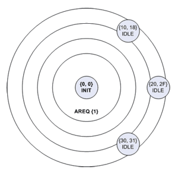
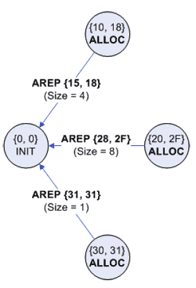
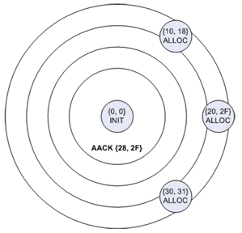
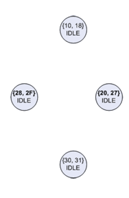

Dynamic Address Allocation
The traditional methods of dynamic address allocation are centralised, and hence are not natively suitable for an ad hoc network which is devoid of any centralised infrastructure.
Any address allocation protocol must satisfy two main aims:
- Dynamically allocate unique addresses within a reasonable time frame.
- Handle changes in network topology.
The existing ad hoc address allocation protocols can be divided into three classes:
- Leader-based - a leader is elected amongst its peers to act as a centralised authority for address assignment.
- Decentralised - uses some variation of duplicate address detection, where a node selects a random address, then verifies its uniqueness via distributed agreement.
- Mutually exclusive address spaces - each node posesses a set of unique addresses, which it may unilaterally allocate parts of to other nodes.
For this project, the mutually exclusive address spaces technique was selected, for its extremely low overhead, and ability to handle network partitions and subsequent remerges with no reconfiguration. Both these factors mean the protocol with have a very low power consumption.
Mutually Exclusive Address Spaces
Basically, when a node joins a network, it requests addresses from neighbouring nodes, one of which will donate half of its address space to the new node.

|

|
| Figure 1: Address request | Figure 2: Neighbours reply with offers |

|

|
| Figure 3: Accept one offer and implcitly reject the rest | Figure 4: Idle |
To gain an understanding of how these protocols operate, please see the following articles:
- A P Tayal, L M Patnaik - An address assignment for the automatic configuration of mobile ad hoc networks
- Zhihua Hu, Baochun Li - ZAL: Zero-Maintenance Address Allocation in Mobile Wireless Ad Hoc Networks
A new protocol...
A new protocol was developed based upon these two existing protocols. The protocol is mainly based on the Tayal and Patnaik solution, incorporating some features and concepts from ZAL, as well as other improvements to improve power efficiency.
Tayal and Patnaik's protocol is simple, and all operations remain local unless an address depletion occurs. The tenet of contigous address spaces also eases memory requirements for storing addresses, and bandwidth requirements for exchanging addresses.
ZAL is more complex, as it proactively promotes even distribution of available addresses throughout the network.The authors claim that the network requires zero maintenance once it has reached a stable state, however reaching a stable state comes with a non-trivial energy cost, particularly in a sparse network. Additionally, ZAL does not have a mechanism to overcome address depletions, instead it assumes that the nodes are mobile, hence the requester will eventually come within range of an available address.
However, ZAL does have a passive feature which promote even distribution of addresses, which was incorporated into the new protocol. When a node is initialising, instead of accepting the first offer of addresses it receives, it will wait for all replies to arrive, then accept the largest one.
The first original improvement was the method used to reject offers which the requesting node did not accept; in both protocols, every unsuccessful offer is rejected with an individual rejection message. In the new protocol, a single message is broadcast indicating which offer was accepted, hence implicitly rejecting all other offers. This reduces the number of messages required for an allocation operation, and hence reduces the energy cost of the operation.
The second original improvement was to reduce unneccesary network-wide address searches in the event of an address depletion (when a node runs out of spare addresses). In the Tayal/Patnaik protocol, any depleted node which receives an address request will immediately initiate a network wide search, even if the requester may have already gotten an address from another node. The modification was for depleted nodes to ignore the first request, and only initiate a search upon receiving two consecutive requests. Two consecutive requests indicates that the first request failed, thus the requester was not able to obtain an address locally. Network-wide operations are very energy expensive, thus preventing them unless they are absolutely neccessary will save power.